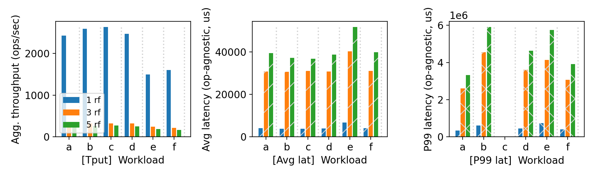
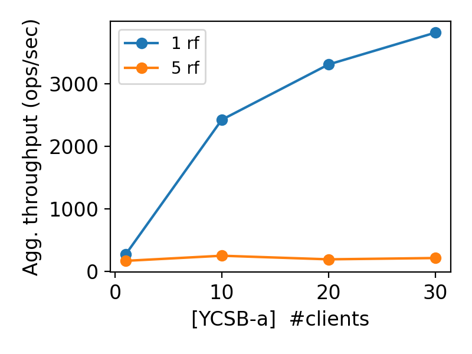

| Group Members | Name | |
|---|---|---|
| Member 1 | Smit Shah | spshah25@wisc.edu |
| Member 2 | Srihari Sridharan | srihari.sridharan@wisc.edu |
We are going to implement Raft consensus protocol across all components. Due to resource constraints on CloudLab, our cluster setup is structured such that all components—including servers, its replicas, the cluster manager, and clients—are executed as separate processes within the same node. While this setup deviates from a distributed multi-node architecture, it allows us to simulate and test our system's behavior effectively without needing additional physical or virtual machines. This design choice ensures that we can evaluate the cluster’s coordination and request handling while adhering to the limitations of our testbed environment.
Our system is composed of two major components: the Cluster Manager and Raft-based replicated servers. The Cluster Manager acts as a centralized coordination unit and does not maintain replicated state. It holds metadata and serves as a registration oracle, responsible for tracking the IP addresses of servers across partitions. Internally, it uses a map structure where the key is the partition ID, and the value is a vector<pair<string, bool>>—the pair indicating each server’s IP address and its registration status.
Upon receiving a configuration command, the Cluster Manager parses the IPs and stores them under the appropriate partition. A partition is considered fully registered once at least one server has successfully registered (boolean marked true) for that partition.
For the servers, we adopted a clean and modular Raft consensus protocol implementation. Each server can be in one of three states: FOLLOWER, LEADER, or CANDIDATE. We abstracted RPC communication into methods for AppendEntries and RequestVote, and we store metadata like currentTerm, votedFor, and the replicated log in memory. All logs are structured as entries containing the operation type (PUT, GET, SCAN , DELETE, SWAP), key-value data, term, and index.
Key background threads include:
A heartbeat/election timeout monitor to trigger elections (T1)
A queue and execution manager for client requests (T2)
A retry loop for unacknowledged entries (T3)
This separation of responsibilities, combined with batching and concurrent RPCs to followers, ensured the design remained both extensible and fault-aware. Replication Protocol Implementation – Easy, Hard, and Interesting
Easy: Implementing the core Raft logic like leader election, log appending, and commit indexing followed well-documented procedures. The clear role-based design (Follower vs. Leader vs. Candidate) helped compartmentalize behavior cleanly.
Hard: Handling concurrency—especially between election-time tasks (T1), live client request processing (T2), and retry mechanisms (T3)—was non-trivial. It was important to ensure consistency in log state while maintaining responsiveness. Another challenge was designing the retry logic for followers that lag or temporarily reject entries. Ensuring log consistency in these scenarios required careful coordination with Raft’s nextIndex and matchIndex updates.
Interesting: We found the process of maintaining commitIndex stability and deriving it from the matchIndex of a majority particularly insightful. It was also interesting to observe how leader authority is established through AppendEntries (even empty NO-OP RPCs), and how followers validate historical consistency via prevLogIndex and prevLogTerm. Node Failure Mitigation
The system's resilience stems from its strict adherence to Raft’s majority-based quorum logic. If a leader receives successful responses from a majority of followers for an AppendEntries RPC, it considers the entry committed—even if a minority of nodes are unresponsive. These lagging followers are handled gracefully:
The leader retries failed AppendEntries with adjusted nextIndex.
If a follower repeatedly fails, it does not block consensus progress, maintaining availability.
If the majority fails, the leader steps down, and a new election is triggered. The election timeout thread ensures timely leadership reevaluation by tracking when the last heartbeat or vote was received.
On client side, we emphasized idempotent retry logic—clients are required to retry their requests until a definitive response is received. This accounts for transient failures, such as leader crashes or network partitions, ensuring client commands are eventually committed (or redirected to the correct leader).
The Cluster Manager, while currently a single point of failure, is designed with simplicity in mind and could be enhanced in future iterations using consensus-backed replication (e.g., multi-node Raft for manager state).
Our Raft-based distributed system was built with a focus on clarity, correctness, and modular RPC-based coordination between servers. The following summarizes the key design aspects, data models, and RPC APIs implemented on the server side. Server State and Data Model
Each server maintains a clearly defined state:
FOLLOWER: Passive node, responds to RPCs.
CANDIDATE: Competes in elections after timeout.
LEADER: Handles client requests and coordinates replication.
We store Raft-related metadata in in-mmeory Raft class. The schema includes:
currentTerm: Integer representing the latest known term.
votedFor: Replica ID that the server voted for in the current term.
log[]: An array of log entries. Each entry stores:
term: Term in which the entry was created.
index: Log index of the entry.
command: One of PUT <k> <v>, SWAP <k> <v>, GET <k>, SCAN <sk> <ek> or DELETE <k>.
Sender (Leader) Implementation:
Invoked when a client sends a new command.
The leader appends the entry to its local log and concurrently sends AppendEntries RPCs to all followers.
Each follower receives the following fields:
term: Leader’s current term.
leaderId: ID of the sending leader.
leaderIP: IP address for client redirection.
prevLogIndex & prevLogTerm: For log consistency checks.
entries[]: Batched entries starting from prevLogIndex + 1.
leaderCommit: Leader’s commit index.
Response Handling:
If follower responds with success:
Update matchIndex and nextIndex.
If follower responds with failure:
Decrement nextIndex[follower] and retry.
Once all threads join the leader calculates commitIndex based on a majority of matchIndex values.
Entries between the old and new commitIndex are applied to both in-memory and state machines, and the response is returned to the client.
Receiver (Follower) Implementation:
Rejects the request if term is outdated or the log is inconsistent at prevLogIndex.
Conflicting entries (same index, different term) are overwritten.
Appends any new entries.
Updates commitIndex if leader’s commit index is higher.
Applies all committed entries to its local state.
Used during election when a server transitions to the CANDIDATE role.
Invoked when the electionTimeout elapses without receiving a heartbeat.
A background thread monitors time since last RPC or vote grant via a lastTimeWhenReceivedRPC timestamp.
The RPC includes:
term: Candidate’s term.
candidateId: ID of the requesting node.
lastLogIndex and lastLogTerm: To ensure log freshness.
Response Logic:
Servers grant vote if:
The request’s term is newer.
The candidate’s log is at least as up-to-date.
Each server only votes once per term.
Concurrency Consideration:
AppendEntries and RequestVote are processed on the main thread.
To maintain atomicity, if a server is currently servicing a client request or log replication, runs in parallel.
Client Interaction & Redirection
Only the leader accepts client commands.
If a follower receives a request, it responds with the leader’s IP.
Clients are required to implement retries in the event of leader crashes, as a command is only considered successful once committed and acknowledged by the leader.
This modular design ensures fault-tolerant replication, state consistency, and leader-driven coordination with a clear interface boundary for external clients and internal nodes.
To validate the robustness and correctness of our RAFT-based replication system, we designed and executed the following failure-based test scenarios:
Follower Failure Simulation
We simulated the failure of one or more follower replicas during normal operation. After issuing client commands to the leader, we intentionally terminated follower processes to ensure that the leader could still commit entries with a majority quorum. These tests verified that the system remains available and consistent despite partial replica failure and that retry logic on the leader correctly handled failed or lagging followers.
Leader Failure and Election Triggering
To test leader reelection, we gracefully and abruptly terminated the current leader while it was serving client requests. The remaining nodes detected the lack of heartbeat within the election timeout and independently initiated new elections. We verified that a new leader was successfully elected, client redirection occurred correctly, and log continuity was preserved across terms.
Failure Beyond Quorum Threshold
We simulated a more extreme scenario by killing replicas until the system no longer had a majority available. In this case, we verified that the leader could no longer make progress (i.e., client requests were rejected or blocked), and no new leader could be elected. This confirmed the system’s adherence to RAFT’s safety guarantees—no decisions were made without quorum.
These testcases collectively helped ensure that our implementation maintains consistency, fault-tolerance, and leadership stability under varying failure conditions.
Parsed the following fuzz testing results:
| server_rf | crashing | outcome |
|---|---|---|
| 5 | no | PASSED |
| 5 | yes | PASSED |
You may be asked to run a crashing fuzz test during demo time.
Our fuzz testing has consistently produced correct outcomes. However, during the development cycle, we did face issues with timeout of the fuzzer. Our code utilizes locks and all processes run on the same node. Due to this, our performance is on average subpar than the expectation. In this assignment since we are focusing on consistency and orrect data rather than performance, we decided to increase the timeout of the fuzzer by 10% to make sure our code succeeds.
Sometimes when we run concurrent processes on the same machine and when we kill the leader, our election triggers transparently. When the new leader takes charge and sends the AppendEntries command received from client, in our implementation we wait for all threads to join. This is a simplification of the original Raft protocol and sometimes leads to unexpected behaviours.
Since we do not have complete visibility into how the Rust-based fuzz tests are created and executed, adding debug statements and tracing the flow of execution has been difficult. Genreation of random testcases everytime makes it difficult to reproduce the same bug. The learning curve for debugging Rust proved to be steep, and given time constraints, we opted to focus on rerunning the service and client rather than diving deep into Rust debugging.
10 clients throughput/latency across workloads & replication factors:

Agg. throughput trend vs. number of clients with different replication factors:

Workload A-F with 10 Clients, Varying Replication Factor
We observe that rf=1 has lowest latency. This is because extra overhead for creating threads, waiting for threads, sending periodidc heartbeats, thread cleanup, is all nil. This latency is still higher than p2 assignment graph with 1 rf and 1 partition. This is because we do append entries in a log, sort, find maximu commit index.
Workload e has SCAN operations because it is ordered map and we iterate over all keys to push it in response. Absolute difference of the latencies with varying replication factors is constant. This indicates workload agnostic factor which in this project is the heartbeat sent periodically over the network.
The first benchmark (Image 1) was conducted across YCSB Workloads A to F using 10 concurrent clients while varying the replication factor (rf) between 1, 3, and 5.
Throughput (Left chart):
We observed that the system achieves highest throughput with a single replica (1 rf) across all workloads, peaking near 2800 ops/sec. As the replication factor increases, throughput drops significantly due to the overhead of maintaining consistency across multiple replicas via Raft’s AppendEntries protocol. At 5 rf, the system achieves less than 500 ops/sec, highlighting the tradeoff between consistency and performance.
Average Latency (Middle chart):
Latency increases with replication. With 1 rf, average latency is as low as 4ms, while 5 rf experiences upward of 40ms, driven by the need to wait for majority acknowledgments before committing entries.
P99 Latency (Right chart):
The 99th percentile latency dramatically increases with replication. With 5 rf, p99 latency reaches up to 6 seconds in some workloads (notably B and E), indicating the long tail behavior induced by slow or unresponsive followers.
These results reflect how replication provides fault tolerance but adds latency and reduces throughput due to coordination costs.
Workload A, Scaling Clients (1 rf vs. 5 rf) 5rf throughput stays constant on increasing number of clients because server is the bottleneck. Creation of threads , management, cleanup heartbeats all add to overhead. However,for 1rf client is the bottleneck. Our hunch is that it will have an inflection point after whichs erver becomes the bottleneck.
In the second benchmark (Image 2), we fixed the workload to YCSB-A and varied the number of clients from 1 to 30 for two configurations: 1 replica and 5 replicas.
With 1 rf, the system scaled well. Throughput increased linearly with more clients, peaking above 3700 ops/sec with 30 clients, showing good concurrency support and minimal write coordination.
In contrast, with 5 rf, throughput remained flat and low (~200–300 ops/sec) regardless of client count. This confirms that replication is the bottleneck, and adding more clients does not improve performance due to serialization and quorum-based replication delays.
This experiment demonstrates that while our system handles increased load effectively in non-replicated scenarios, replication introduces a ceiling on scalability due to synchronous coordination overhead in Raft.